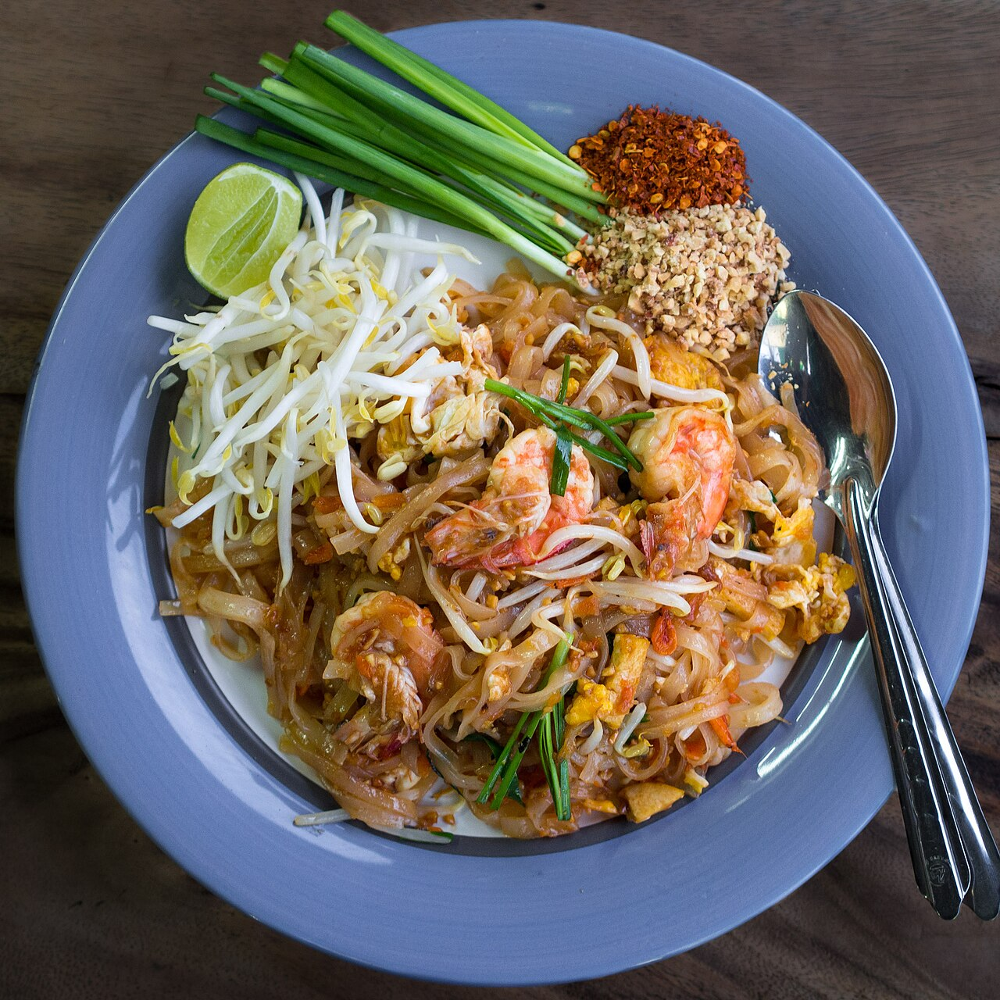

วัตถุดิบ
- มันกุ้ง 1 ช้อนโต๊ะ
- กุ้งแห้ง 1 ช้อนโต๊ะ
- ไชโป๊ 1 ช้อนโต๊ะ
- เต้าหู้แข็งหั่นแท่ง 3 ช้อนโต๊ะ
- กุ้งสด 8 ตัว
- เส้นผัดไทยแช่น้ำ 150 กรัม
- น้ำผัดไทย 2 ทัพพี
- ถั่วงอก 100 กรัม
- ใบกุ้ยช่าย 30 กรัม
- ไข่เป็ด 2 ฟอง
- ถั่วงอก (สำหรับทานเคียง)
- กุ้ยช่าย (สำหรับทานเคียง)
- ถั่วลิสงป่น (สำหรับทานเคียง)
- น้ำตาลทราย (สำหรับทานเคียง)
- พริกป่น (สำหรับทานเคียง)
- มะนาว (สำหรับทานเคียง)
STEP 1 : ทำซอสผัดไทย
เคี่ยวน้ำผัดไทย โดยการนำน้ำตาลมะพร้าว น้ำปลา และมะขามเปียกตั้งไฟเคี่ยวให้ละลายเข้ากัน แล้วพักไว้
STEP 2 : ผัดเครื่อง
ตั้งกระทะใส่น้ำมัน ใส่มันกุ้ง หอมแดง ไชโป๊ และเต้าหู้ผัดให้สุกหอม จากนั้นใส่กุ้งลงไปผัด เมื่อกุ้งสุกดีใส่เส้นผัดไทยลงไป ผัดให้เส้นสุกนุ่ม แล้วใส่ซอสลงไปผัดให้เข้ากัน
STEP 3 : คลุกกับไข่และจัดเสิร์ฟ
หลังจากผัดเส้นเข้ากับน้ำซอสดีแล้ว จากนั้นใส่ถั่วงอก ใบกุ้ยช่าย ตอกไข่เป็ดตามลงไป รอจนไข่เป็ดเริ่มสุก จึงผัดให้ทุกอย่างเข้ากัน
ตักขึ้นจัดเสิร์ฟ พร้อมเครื่องสำหรับทานเคียง